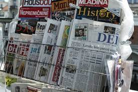
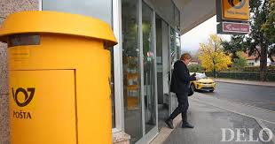
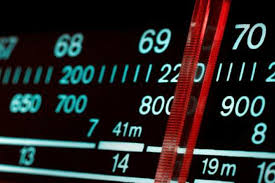
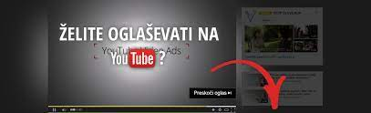
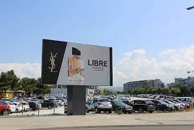
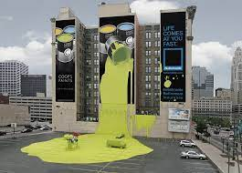
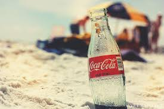
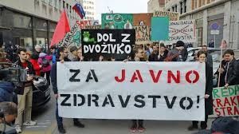
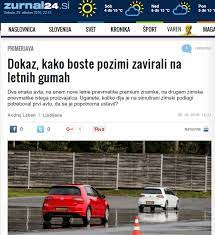

1. Tiskano oglaševanje, se nanaša na tiskane oglase v časopisih ali revijah.

2. Neposredno oglaševanje po pošti, omogoča podjetjem dostavo katalogov, brošur, letakov na naslove uporabnikov na določenem območju.

3. Televizijsko oglaševanje, kjer so oglasi dolgi 20-, 30- ali 60- sekund, velja za dražji način oglaševanja.
4. Radijsko oglaševanje, lahko slišimo med programskimi odmori, največ pa jih je zjutraj, ko se ljudje peljejo v službo in popoldne, ko se peljejo iz nje.

5. Podcast oglaševanje, po navadi oglašujejo na začetku, sredini in koncu epizod.
6. Oglaševanje na družbenih omrežjih, podjetjem omogoča, da se osredotočijo na doseganje strank, glede na starost, lokacijo ali nakupovalne navade.
7. Plačano oglaševanje v iskalnem omrežju, plačano iskanje, znano tudi kot PPC oglaševanje ali oglaševanje na klik. Najbolj znano je Google ads oglaševanje, gre za zakup ključnih besed. Ko ljudje vpišejo te ključne besede v brskalnik se prikažejo oglasi, oglaševalcev, ki so te besede zakupili.
8. Nativno oglaševanje je digitalno oglaševanje, pri katerem oglasi izgledajo kot vsebine, ki jih gledalec trenutno bere, tako so oglasi manj moteči.
9. Prikazno oglaševanje uporablja prepoznavne oglase. Vključujejo lahko oglasne pasice na vrhu ali ob straneh spletnih strani, pojavne oglase ali video oglasi, ki se prikažejo pred ali med nalaganjem video vsebine.

10. Zunanje oglaševanje so oglasi, ki jih vidimo zunaj naših domov, vidimo jih na javnih mestih, prevoznih sredstvih, panojih in podobno.

11. Gverilsko oglaševanje je cenejše in se uporabljajo bolj kreativne metode za pritegnitev pozornosti. Pogosto ni v skladu z zakonodajo.

12. Promocijsko oglaševanje izdelkov je prikazovanje izdelkov v medijske vsebine, na primer v televizijsko oddajo ali film.

13. Javno oglaševanje oz. javna obvestila so oglasi , ki promovirajo namen ali pobudo in ne izdelka. Obveščajo javnost o temi, ki koristi njim ali drugim.

14. Prikrito oglaševanje, objave so po navadi videti kot novinarki ali avtorki prispevki, v resnici pa so sponzorirane objave.

 OGLASI IN DRUŽBENA OMREŽJA
OGLASI IN DRUŽBENA OMREŽJA